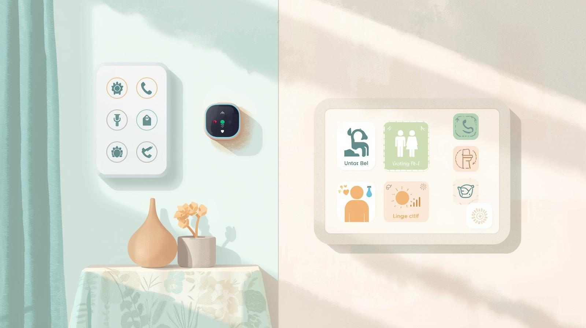

Domatica
Automatització de les parts elèctriques de la casa a través d'un mòbil, un asssistent de veu o una tablet dedicada
Possibilitat de cosultar des de la distància l'estat de les llums
Possibilitat de vigilància a través de imatge i veu
Domòtica
Estudi de les possibilitats d'implementar sistemes domòtics per l'automatització de:
Llums, persianes, televisions, calefacció, cliatitzció
Control a través de wall panel, mòbil o assistent de veu
Automatització de les parts elèctriques de la casa a través d'un mòbil, un asssistent de veu o una tablet dedicada
Possibilitat de cosultar des de la distància l'estat de les llums
Possibilitat de vigilància a través de imatge i veu
